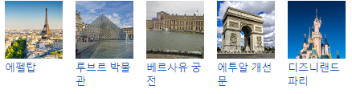

T H E E U R O P E A N
관광명소 :

언어: 프랑스어
기후: 온대 기후 지역으로 해양성·대륙성·지중해성 기후가 모두 나타난다. 대부분 지역이 해양성 기후이나 최남부 지방은 지중해성 기후이다.
면적: 551,695㎢
인구: 65,233,000명
수도: 파리
정치체제: 이원집정부제, 양원제, 다당제, 단일국가
화폐단위: 유로
환율: 1000KRW = 약 0.75EUR